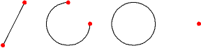
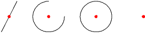
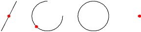
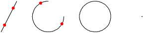
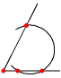
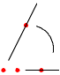

|
||
 |
||


13 Object Snap
This chapter lists all snap modes that can be activated to assist the user when setting points to exact co-ordinates.
For most constructions and modifications in QCad, it is necessary to specify the co-ordinates of reference points, startpoints, endpoints, centers or other identifying points. In order to make it possible to pick exact positions defined by previously drawn entities or by the grid, QCad offers you a set of object snap modes. The toolbar that features those modes, is automatically shown whenever it makes sense to use them (Figure 20).
{kind=link}
Figure 20: The snap toolbar.
Free Positioning
CAD Toolbar:
Menu:
Snap - Free
Hotkey:
os
Command:
?
Description:
Allows the user to set the co-ordinate freely using the mouse. Note, that this is almost never the recommended way of setting co-ordinates in a CAD system.
Snap to Grid
CAD Toolbar:
Menu:
Snap - Grid
Hotkey:
sg
Command:
?
Description:
Snaps to grid points.
Snap to Endpoints
CAD Toolbar:
Menu:
Snap - Endpoints
Command:
?
Hotkey:
se
Description:
Snaps to endpoints of lines and arcs and to points (Figure 21).

Figure 21: Endpoints found by the snap tool.
Snap to Points on Entities
CAD Toolbar:
Menu:
Snap - On Entity
Hotkey:
sn
Command:
?
Description:
Snaps to the closest point that is on an entity (Figure 22).
Figure 22: 'On Entity' snaps to any point on the line of an entity.
Snap to Centers
CAD Toolbar:
Menu:
Snap - Centers
Hotkey:
so
Command:
?
Description:
Snaps to centers of lines and arcs and to points (Figure 23).

Figure 23: Centers found by the snap tool.
Snap to Middle Points
CAD Toolbar:
Menu:
Snap - Middle
Hotkey:
sm
Command:
?
Description:
Snaps to middle points of lines and arcs and to points (Figure 24). Note that the middle point of an arc is in the middle of the arc line while the center is at the center of the arc.

Figure 24: Middle points found by the snap tool.
Snap to Distance Points
CAD Toolbar:
Menu:
Snap - Distance from Endpoint
Command:
?
Options Toolbar:
Description:
Snaps to points with a given distance from endpoints (Figure 25). The distance can be adjusted in the options toolbar.

Figure 25: Example snap points for the snap tool 'Distance from Endpoint'.
Snap to Intersections
CAD Toolbar:
Menu:
Snap - Intersection
Hotkey:
si
Command:
?
Description:
Snaps to intersections between entities (Figure 26).

Figure 26: The Intersection Snap tool finds automatically all visible intersection points.
Snap to Intersections Manually
CAD Toolbar:
Menu:
Snap - Intersection Manually
Command:
?
Description:
Sometimes the intersection snap mode cannot be used to snap to an intersection point because the point is not on one or both of the entities. The second intersection tool lets you specify the two entities and then snaps the intersection point even if it's outside the entities (Figure 27).

Figure 27: The Manual Intersection Snap tool also lets you specify invisible intersection points.
Snap Restrictions
In addition to the snap functions described above, QCad can further
restrict the position of the mouse cursor orthogonally to the position of the
relative zero point. Figure 28 illustrates an example of
how to use snap restrictions.
The 'Snap Point' is the point the user wants to specify. It's the point on
the bottom line of the shape that has the same X-co-ordinate like the center
of the full circle.
The mouse cursor is located at the circle line. Because QCad is in the snap
mode "Snap to Center Points", the center of the circle would normally be the
snap point. A small rhombus highlights that point ("Center Point"). With the
snap restriction "Restrict Horizontally" activated, QCad snaps to the point
on the horizontal position of the relative zero point ("Snap Point").
{kind=link}
Figure 28: Snap restrictions further limit the snap position to imaginary lines orthogonally to the relative zero point.
Restrict Nothing
CAD Toolbar:
Menu:
Snap - Restrict Nothing
Command:
?
Description:
Disables all restrictions.
Restrict Orthogonally
CAD Toolbar:
Menu:
Snap - Restrict Orthogonally
Command:
?
Description:
Restricts orthogonally to relative zero point.
Restrict Horizontally
CAD Toolbar:
Menu:
Snap - Restrict Horizontally
Command:
?
Description:
Restricts horizontally to relative zero point.
Restrict Vertically
CAD Toolbar:
Menu:
Snap - Restrict Vertically
Command:
?
Description:
Restricts vertically to relative zero point.
Relative Zero Point
As mentioned previously, there is a relative Zero point in every QCad
drawing. It appears as a small red circle with a hair cross. The relative
zero point is the reference point for relative co-ordinates you enter in the
command line and for snapping restrictions.
Normally, the relative zero point moves around automatically. For example if
you're drawing a
sequence of lines
, the relative zero point always moves to the last point you've set. The next
point of the sequence can then be defined in relative co-ordinates to the
last point.
Sometimes this is not convenient and you would rather want to set the
relative zero point to another position or lock its position so it stops
moving around automatically. The snap toolbar offers two tools that do
exactly this.
Moving the Relative Zero Point
CAD Toolbar:
Menu:
Snap - Set Relative Zero
Command:
?
Description:
Lets the user set a new location for the relative zero point.
(Un-)locking the Relative Zero Point
CAD Toolbar:

Menu:
Snap - (Un-)Lock Relative Zero
Command:
?
Description:
When enabled, this switch locks the position of the relative zero point. This means it doesn't move around automatically. You can still move it manually using the tool described above.
|